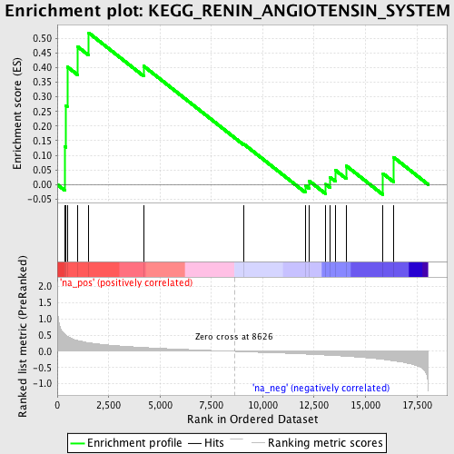
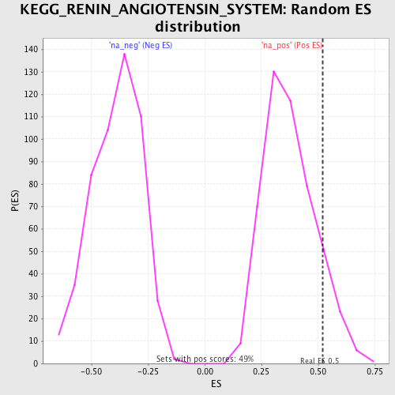

| | | Dataset | GSEA_Acromegaly_prerank_FC |
| Phenotype | NoPhenotypeAvailable |
| Upregulated in class | na_pos |
| GeneSet | KEGG_RENIN_ANGIOTENSIN_SYSTEM |
| Enrichment Score (ES) | 0.51922935 |
| Normalized Enrichment Score (NES) | 1.3912755 |
| Nominal p-value | 0.09465021 |
| FDR q-value | 0.13449052 |
| FWER p-Value | 0.986 |
Table: GSEA Results Summary

Fig 1: Enrichment plot: KEGG_RENIN_ANGIOTENSIN_SYSTEM
Profile of the Running ES Score & Positions of GeneSet Members on the Rank Ordered List
| PROBE | GENE SYMBOL | GENE_TITLE | RANK IN GENE LIST | RANK METRIC SCORE | RUNNING ES | CORE ENRICHMENT | | 1 | AGTR1 | | | 372 | 0.519 | 0.1295 | Yes |
| 2 | ACE2 | | | 418 | 0.496 | 0.2703 | Yes |
| 3 | ENPEP | | | 486 | 0.472 | 0.4031 | Yes |
| 4 | LNPEP | | | 978 | 0.335 | 0.4726 | Yes |
| 5 | MME | | | 1527 | 0.266 | 0.5192 | Yes |
| 6 | ACE | | | 4202 | 0.119 | 0.4054 | No |
| 7 | THOP1 | | | 9058 | -0.012 | 0.1397 | No |
| 8 | ANPEP | | | 12066 | -0.084 | -0.0027 | No |
| 9 | CPA3 | | | 12264 | -0.089 | 0.0122 | No |
| 10 | REN | | | 13073 | -0.116 | 0.0008 | No |
| 11 | CTSA | | | 13274 | -0.123 | 0.0253 | No |
| 12 | CMA1 | | | 13530 | -0.132 | 0.0494 | No |
| 13 | CTSG | | | 14069 | -0.153 | 0.0639 | No |
| 14 | NLN | | | 15853 | -0.251 | 0.0375 | No |
| 15 | AGT | | | 16373 | -0.292 | 0.0930 | No |
Table: GSEA details [plain text format]

Fig 2: KEGG_RENIN_ANGIOTENSIN_SYSTEM: Random ES distribution
Gene set null distribution of ES for KEGG_RENIN_ANGIOTENSIN_SYSTEM